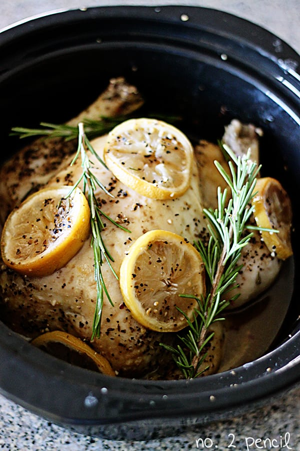

Lemon Grill Chicken Recipe

Recipe from number-2-pencil.com
Ingredients
- 4 lemons
- 2-3 heads of garlic
- 1 whole chicken 4 to 5 pounds
- Fresh rosemary or any fresh herbs
- All-purpose steak seasoning or salt and pepper
Directions
- Cut garlic heads and lemons in half and lay in bottom of slow cooker.
- Cut the bottoms off the lemons so they lay flat.
- Add a sprig of rosemary, or any herbs.
- Remove insides from chicken, rinse chicken and pat dry.
- Season chicken well, inside and out, with all-purpose steak seasoning or salt and pepper.
- Lay chicken on top of garlic and lemon slices and stuff the chicken with a garlic head cut in half, and a lemon cut in quarters.
- Cover top of chicken with additional lemon slices and rosemary.
- Turn slow cooker to high, and cook for about 4 hours, or until chicken reaches 165 degrees.
- Important: Use a meat thermometer to check for doneness.
When chicken has reached 165, turn off slow cooker and let chicken rest for about 15 minutes.
Remove from slow cooker, carve and serve.